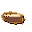
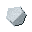
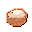
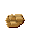
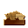
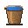
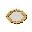
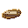

Tier 1 — Stone & Early Materials¶
88 recipes
Camp Marker 37
Seat the bit transverse on a knee-bend haft and lash it tight; the edge faces the worker.
e1_assemble_adzeCoil long bark strips into a spiral and bind each turn to the last with cord. The result is a light carry-basket for forage, stone, and clay -- it hauls loose material your hands cannot. The first real upgrade to your carrying capacity.
basket_coiled_build_manualSL

stripped log×1 SF
stone flake×0 → RBrough board plank×2 SDsmall dry sticks×1Score and split a stripped log lengthwise into rough flat planks. Slow without a metal saw, but the planks unlock shovel scoops and barrel-making.
e1_saw_planks_from_strippedLoop the cord once around a straight spindle so sawing the bow spins it -- drills holes and starts fire.
e1_build_bow_drillBend a green stave into a bow and string it tight; the cutting blade is fitted later when metal exists.
e1_build_bow_saw_frameEBearthenware brick×6 RC

raw clay×4 FI
fieldstone×4 → CRcharcoal retort kiln×1Build a sealed brick chamber with a cooling pipe (so the gas turns back into liquid); the wood gas flows through it instead of escaping up a vent.
e1_build_charcoal_retort_kilnSet a narrow flake end-on in a split stick and bind it so a mallet blow drives straight through.
e1_haft_chiselplaceModel=chute_wood • Station: camp_marker_basic
itemdb_chute_wood_camp_marker_basicLD

loose dirt×4 WF
water-filled bark bucket×1 PF
plant fibers×1 → RCraw clay×1Stir dirt into water in the bucket, let it settle, then strain the heavy clay out through plant fibers. Wet, dirty, and not much per batch -- but it works anywhere you have dirt and water.
e1_wash_dirt_for_clayLash a long flake between two short grips so it can be pulled toward you to shave bark and round stock.
e1_haft_drawknifeRing eight river stones around a scraped hollow and lay kindling in the middle. The stones hold the heat and stop the fire from wandering, turning a one-off campfire into a fixed hearth you can cook over and harden clay against. No tools beyond your hands -- just gather and stack.
fire_pit_build_manualWinnow and pick the dry mix apart into seed you can actually sow on purpose.
e1_sort_seed_mixHollow a shallow batea from a wood round; the gentle dish lets heavy fines settle while you swirl off the light sand.
e1_carve_gold_panPound a spare fired brick into coarse grit; mixed back into raw clay, it stops the cracks that form when a pot shrinks as it dries.
e1_crush_grogSoak the stalks until the woody core rots away, then beat and comb out the long stringy fibers -- the thread used for cloth and packing.
e1_ret_hemp_fiberLash the blade across the haft at a chopping-down angle for turning soil.
e1_assemble_hoeStrip a stout pole and flatten one end into a prying tip; the longer the pole the more it lifts.
e1_carve_lever_pry_barBore a dense billet, drive the haft through, and bind the cheeks so it cannot split out.
e1_assemble_malletTie even knots along a stretched rope as repeatable length marks; wind it on a stick to carry.
e1_knot_measuring_cordDrill a hardwood block to fit the shaft and pack it with grease (tallow); it stays cool enough for slow mill work.
e1_fit_plain_bearing_woodSoak the pulled stalks until the core rots free, then beat out the long bast.
e1_ret_flaxPeck a groove round a small stone, tie on a line, and let it hang -- it finds true vertical every time.
e1_shape_plumb_bobWeave the fibers tight on a loom; the close, even cloth blocks wind without tearing.
e1_weave_sail_clothDish a rough board into a scoop, split the haft to grip its neck, and lash it fast.
e1_assemble_shovel_woodWeight a spindle with a holed stone whorl so a flick of the cords keeps it turning through the bore.
e1_build_spindle_drillKnap a core to a gouging lip set across the long axis, then grind it keen for transverse cuts.
e1_knap_stone_adze_headSeat the head in a split or notch in the haft and lash it tight; wet rope shrinks as it dries.
e1_assemble_stone_axeHard-hammer percussion to rough the wedge, then grind the edge on coarse stone.
e1_knap_stone_axe_headFlake a flat, broad blade and grind one long edge; it lashes broad-side to the haft.
e1_knap_stone_hoe_bladeMD

medium dry log×1 SFstone flake×0 → SLstripped log×1 BSbark slabs×2 CBcurled bark strip×2Score the bark, peel it off in slabs, and curl the inner bark into strips -- the log is now clean and ready to use.
e1_strip_logSift river sand to an even grit -- use this when you have no spare fired clay to crush into grog.
e1_screen_temper_sandWA wattle-and-daub wall×1
wattle-and-daub wall×1
Weave a lattice of green sticks (the wattle), then pack it with a mix of wet clay and water (the daub) and let it dry hard. It is the oldest real wall there is: cheap, windproof, and strong enough to carry a thatch roof. Slow by hand because every panel has to be woven and packed.
wall_wattle_and_daub_build_manualWhittle a hardwood billet to a clean taper; season it hard so it bites instead of crushing.
e1_carve_wedgeStrip the bark and whittle the stick straight and smooth with a fresh flake edge.
e1_carve_wood_haftSplit the stripped log into handles (called hafts) and trim the leftover bits into kindling sticks.
e1_carve_haft_from_strippedSplit a small log and whittle a handful of tapered wooden pegs; hammered in dry, they swell tight in the hole and lock.
e1_carve_wooden_pegStand the split wood strips (called staves) in a ring and bind them with a tight rope hoop; the swelling wood seals the gaps.
e1_build_wooden_tubCarving Bench 3
Station: carving bench
itemdb_board_plank_rough_carving_benchStation: carving bench
itemdb_shaft_wood_round_carving_benchStation: carving bench
itemdb_timber_beam_rough_carving_benchCharcoal Retort Kiln 1
Bake a sealed batch of wood so it turns to charcoal without burning up; the cooling pipe catches the wood tar that an open clamp would let escape.
e1_char_retortEarthen Kiln 4
A fired-clay nozzle that carries the bellows' blast into a furnace without burning away. Sand tempers the clay so it survives the thermal shock of repeated firings. You make this now so the bloomery has a throat when the Metal Ages arrive.
clay_tuyere_fire_manualStation: earthen kiln (updraft)
itemdb_clay_tuyere_earthen_kiln_updraftStation: earthen kiln (updraft)
itemdb_pitch_earthen_kiln_updraftGS glazed stoneware jar×1
glazed stoneware jar×1
Station: earthen_kiln_updraft
itemdb_stoneware_glazed_jar_earthen_kiln_updraftGathered from the world 1
Hand Crafting 2
Station: hand
itemdb_tool_stone_knife_hafted_hand_crafting_2x2Station: hand
itemdb_water_level_hand_crafting_2x2Survival Campfire 2
Melt the trimmed fat slowly over low heat, skim the clean fat (called tallow) off the crispy leftover bits, and let it cool until hard.
e1_render_grease_tallowWorkbench 38
Station: workbench
itemdb_bellows_workbenchTwo blocks of sheaves reeved with a single rope. Each fall of rope between the blocks divides the load again, so four falls let one person hold what four could not. The price is rope and travel: you haul four times the length to raise the load once.
block_and_tackle_build_manualRTrough timber beam×2 WSwooden shaft (round)×1 WPwooden power pole×2 ISiron strap×2 PBplain bearing (wood)×1 → CAcapstan×1
A vertical drum turned by push-bars walked in a circle. Several people throw their weight against the bars at once, so a gang can drag loads -- beached boats, raw timber, foundation stone -- that no rope-pull ever could. Iron straps keep the drum from splitting under the strain.
capstan_build_manualplaceModel=workbench • Station: workbench
itemdb_carving_bench_workbenchAn iron-barred grizzly screen in a heavy timber frame. Tip crushed ore or gravel across it and the fines fall through while the oversize rolls off to be crushed again -- the sorting step that keeps the later mills from choking on rock that is too big.
coarse_screen_build_manualA stone-filled crate that lifts for you: let the weight fall and it raises the load on the other end of the rope. Deliberately heavy on stone -- the whole point is the mass. Pair it with a gin pole or a treadle and gravity does the lifting.
counterweight_build_manualFS fire-starter bundle×1
fire-starter bundle×1
Station: workbench
itemdb_fire_starter_bundle_workbenchplaceModel=flywheel,station=true,transport=shaft • Station: workbench
itemdb_flywheel_workbenchGG geared gristmill×1
geared gristmill×1
station=true,station_input=2,station_output=2 • Station: workbench
itemdb_gristmill_geared_workbenchA wedge-and-peg arm that drops through a hole in the bench and pins your work flat with a tap, freeing both hands. Entirely wood and stone -- no iron needed yet -- but it is the difference between fighting a workpiece and working it.
holdfast_build_manualStation: workbench
itemdb_lever_press_workbenchLW lime wash×1
lime wash×1
Station: workbench
itemdb_lime_wash_workbenchCWconstruction wood×10 ROrope×4 WAwheel-and-axle×2 T(tailpole (windmill yaw)×1 → PMpost mill (windmill)×1
Optional late-T1 • Station: workbench
itemdb_post_mill_windmill_workbenchRTrough timber beam×2 WSwooden shaft (round)×1 RRrounded river stone×6 PBplain bearing (wood)×1 WPwooden peg×4 → PWpotter's wheel (kick)×1
A heavy stone disk keyed to a vertical shaft on a wooden bearing. You kick the flywheel to keep it spinning and shape the clay on the head up top -- the momentum of the stone does the work your free hand cannot. Building it is the gate to throwing pots instead of coiling them.
potters_wheel_kick_build_manuallate-t0,quality-of-life • Station: workbench
itemdb_potters_wheel_kick_workbenchA grooved sheave turning on a dowel pin in an iron-strapped block. On its own it just changes the direction of a rope -- but that is enough to pull down on a load instead of lifting up on it, and it is the building block every heavier rig is made from.
pulley_build_manualStation: workbench
itemdb_pulley_workbenchstation=true,station_input=2,station_output=1 • Station: workbench
itemdb_quern_rotary_workbenchStation: workbench
itemdb_riffle_insert_sluice_workbenchstation=true,station_input=1,station_output=2 • Station: workbench • Byproduct: tailings
itemdb_rocker_box_workbenchA long geared frame that twists many yarns into heavy rope in one pass, hook turning against hook down the length of the walk. It is the leap from hand-laid cordage to real line -- the rope a capstan or a gin pole actually needs.
rope_walk_jig_build_manualRTrough timber beam×1 WDwooden dowel×2 FIforged iron crank×1 ISiron strap×1 → SJscrew jack (wooden)×1
A hand-cut hardwood screw running in a timber nut. It lifts slowly but holds its load without slipping and without anyone holding the crank -- exactly what you want when truing up a beam or raising a sill a hair at a time.
screw_jack_wooden_build_manualStation: workbench
itemdb_sheave_workbenchA woven fiber mesh stretched in a wooden hoop. Shake flour, sand, or wet clay through it and it sorts the fine from the coarse -- the first tool that grades material by size instead of by eye. Tempering clay through a sieve is what stops fired pots from cracking.
sieve_build_manualstation=true,station_input=1,station_output=2 • Station: workbench • Byproduct: tailings
itemdb_sluice_box_workbenchAn inclined plank channel with riffle bars across the floor. Wash crushed material down it and the current carries the light waste away while the heavy fraction drops and lodges behind the riffles. It lets running water do the sorting your hands used to.
sluice_trough_build_manualStation: workbench
itemdb_stamp_mill_manual_trip_hammer_workbenchstation=true,station_input=1,station_output=1 • Station: workbench
itemdb_tailings_box_workbenchStation: workbench
itemdb_tailpole_windmill_yaw_workbenchA foot pedal linked by a pitman to a crank. It turns the weight of your leg into rotary power and frees both hands -- the drive behind pole-lathes, looms, and grindstones. The first power source that is not somebody else's arms.
treadle_build_manualWAwattle-and-daub wall×1
Station: workbench
itemdb_wall_wattle_and_daub_workbenchOptional late-T1 • Station: workbench
itemdb_waterwheel_overshot_workbenchOptional late-T1 • Station: workbench
itemdb_waterwheel_undershot_workbenchWGwooden gear (peg-toothed)×1 WSwooden shaft (round)×1 PBplain bearing (wood)×2 ISiron strap×1 → WAwheel-and-axle×1
A large wheel keyed to a thin axle on wooden bearings. A light pull on the rim becomes a strong turn at the core -- the same trick as a windlass, but continuous. It is the heart of every geared machine you will build after this.
wheel_and_axle_build_manualWSwooden shaft (round)×1 RTrough timber beam×2 FIforged iron crank×1 PBplain bearing (wood)×2 ROrope×2 → WIwindlass×1
A horizontal drum wound by a forged iron crank turning in wooden bearings. The crank's leverage turns a weak, steady arm into a controlled lift -- the standard way to raise water, ore, or a bucket from a shaft.
windlass_build_manualStation: workbench
itemdb_wooden_dowel_workbenchStation: workbench
itemdb_wooden_gear_peg_toothed_workbenchFit split planks into a ring of staves and bind them with rope hoops until the joints swell tight. It holds water, mash, dye, or hide-soak -- the big open vessel a camp industry runs on. Slow to build because every stave has to be shaped to close the circle.
wooden_tub_build_manual